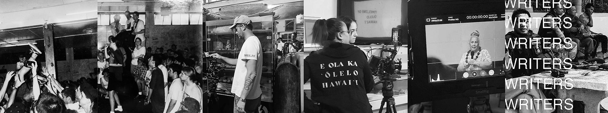

SOCIAL + MOVEMENT MANIFESTO
1. The "social" is a connection, says the late Charles Tilly. This connection is technological (Tufekci2017), but also relational (Felski & Friedman 2013, p. 2).
2. The "social" is closely related to education, from university campuses (2015) to intellectual and cultural knowledge (ho'omanawanui 2023) that structures participation.
3. The "social" can be understood through specific practices: for instance, as socially engaged art (Helguera 2011; Becker 2012).
4. The "social" is not universal, but a crucial part of recognizing and including existing differences (Levenstein 2020).
5. The "social" is also the ideological, the visual (Mirzoeff 2016), the aural, and the various modes that link the parts (or "pixels") of society.
6. A "movement" draws attention to a shift in the ways society is organized.
7. A "movement" is a statement based in universal political principles, such as freedom (Garton Ash 2016).
8. A "movement" can materialize in the streets, as they did in 2011, but also in literature (El-Kurd 2021), music (Garratt 2019), and other modes of political expression.
9. A "movement" needs to understand its time and its spectacles (Duncombe 2018).
10. A "movement" requires collaboration and a strong commitment to others over a sustained period of time (kekahi wahi 2024).